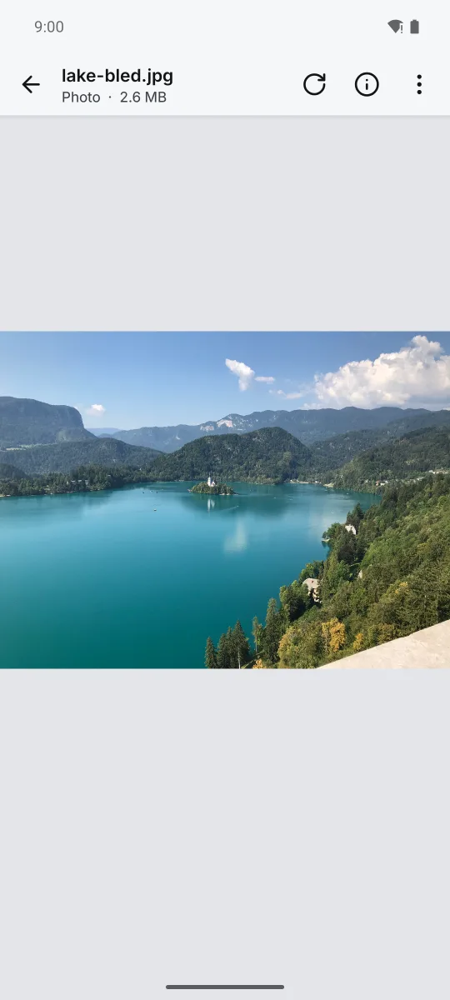
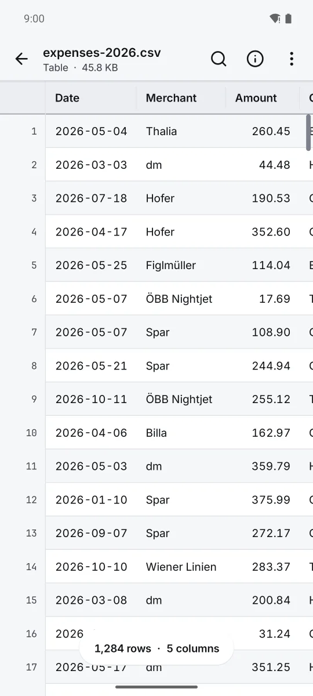
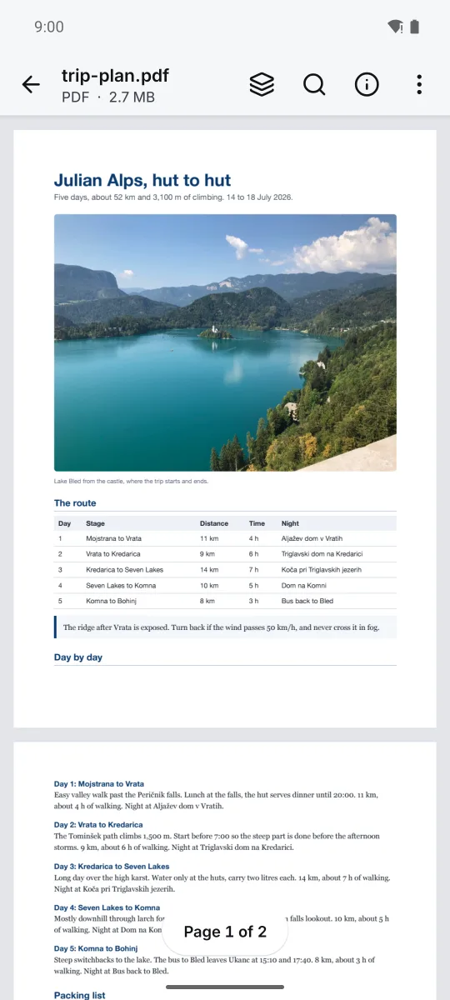
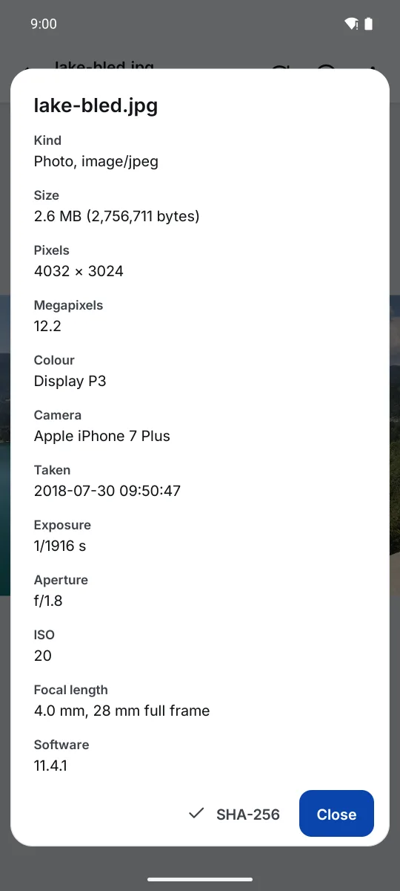

User guide
Pure Peek
Open any file and see it properly: photos at full quality, PDF, CSV and Excel tables, code, logs, Markdown, Word, web pages, zip and more. Pay once, no ads, no internet permission.



